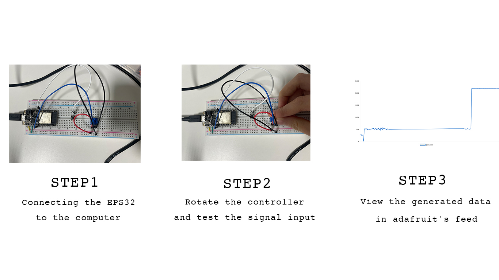

Store the data on AdafruitIO
How often will you measure and how often will you record the values?
I wil use the flex sensor to record the values.
Will you record all the values or only the changes?
When will the translation of raw values into meaningful data take place - before or after the recording?
